Shoutouts
Shoutout to “The Awepartment” for starting a new job next week!
Shoutout to “The Filmmaker” for getting a written offer for changing teams to move to NYC and pursue the dream of yours. At your birthday party I joked with you that I was only giving you my verbal congratulations since you just got your verbal offer but now that it is in writing consider this my written congratulations!
Monday
You know why I got hired at my job? They saw my comedy and thought it was like modern ai chips in that a lot of FLOPs are produced. Anyway once I finished FLOPping around I went to Mission Run Club with “Hell Yeah” and “Let me give you a call on the world's smallest phone”. This run was especially brutal since we had to run close to the top of Bernal Heights.
This time I asked to see if there was a bag drop and the bar we were going to afterwards said no so I had to do the run with my bag and it wasn’t pretty.
At one point the elevation grade on the hill was 20%.
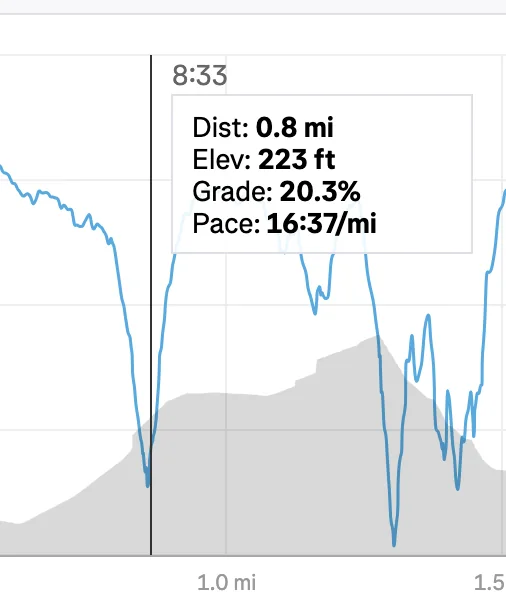
According to an online tool which converts pace based on the grade of incline I was going at a 6:12 equivalent
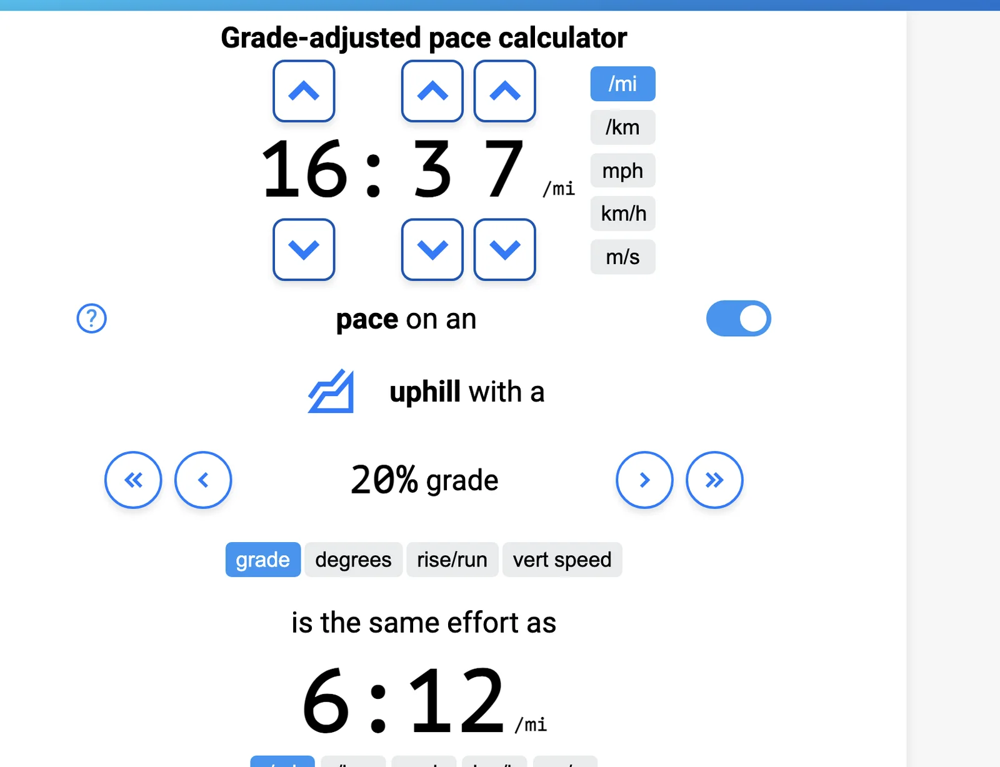
I take this to mean that I did seriously try up the hill which I’m happy with at least.
I was not as upbeat as I usually am and when people were cheering me on I made no secret of how beat up I was. I was admittedly disappointed I couldn’t go as fast as I thought I could but on the other hand people were quite impressed I did the run with a backpack on so maybe I should give myself a speed modifier for that. One consequence of the hill was that my cardio didn’t 100% recover and even the last mile that was flat felt harder than normal. Thankfully I pushed through it and finished relatively strong but even that felt Herculean.
At this point I want to shout out both “Hell yeah” and “Let me give you a call on the world's smallest phone” for taking the hill with more enthusiasm than me. They found it delightful which I found quite inspiring (not at the time mind you but certainly afterwards). After the run I found myself somewhat craving the challenge to see if I could have a better go of it. I’m not sure why but for whatever reason one of my thoughts while I was dying of cardio was that if I was an armadillo I would be cast out and have my shell taken off with the pace I was going. You may think that that makes no sense and I agree but for whatever reason as my lungs were being given the ol Mike Tyson my mind went to armadillos and frankly I don’t really know what that says about me.
Tuesday
Once I finished devouring the company Ito Ens I went to play spikeball with “The Spiker,” “Aquaman,” and a few others. After the run yesterday I got some shin splits so I didn’t really feel like playing too much and so I decided to just chill and go home. I did my laundry which in some ways justifies my choices but otherwise I just lounged around. I didn’t really do much of anything productive either professionally or personally.
Wednesday
After I prefilled in the front and I decoded in the back I went to Midnight Runners. Apparently today is national dog day so a bunch of people brought their dogs. When I saw a bunch of people just flock to dogs it reminded me how I don’t really get dogs. I mean I find certain dogs like corgis cute and siberian huskies cool but I don’t get why so many people go gaga for them. I’ve seen people immediately be distracted by a dog and think they're the best thing ever. And when I pet a dog I can’t say I feel much of anything. For some people it’s amazing and I simply don’t get it. And don’t get me wrong I’m not knocking it, I TRIED to feel that way MANY times. I hoped that if I faked it enough I would make it. Maybe now I’ll love dogs. Maybe I can be one of those people that gets so much joy out of it but I DON”T and frankly I kinda wish I did :(.
Does it make me uncaring? I don’t think so but it makes me wonder if I’m missing some kind of empathy that makes this easy. For all you readers who love dogs, and go gaga for them can you tell me why? I genuinely want to know.
It reminded me of how I’ve tried uni 4 times and hated it each time. I REALLY wanted to like it. That way if I ever go uni foraging I’ll be genuinely excited but I don’t feel it about that either. Maybe it is what it is and I can’t like it no matter how hard I try.
Before the run started we did an icebreaker about pets and I got asked if I had any. Now I knew this was a risk before doing it but I joked about having a pet air purifier who I made an instagram for and I could tell everyone grew a little more displeased having heard that. Normally this wouldn’t be such a big deal but given the above it did make me feel more alienated than normal. Yeah I probably shouldn’t have done that I know, I shoulda just said no and moved on but hey you win some and you lose some right.
The run itself was OK but my shins were on fire so I stopped after the first mile and decided to just go home and chill.
Thursday
After another day in the token mines I met up with “The Philosopher” and went on a walk from South Mission to Excelsior. I thought it would be fun to mix up the areas we walk around in so we went a bit off the beaten path. We went to a place called Hawaiian Drive Inn which Daniel Lurie went to at one point. I got a burger there which was quite good for how cheap it was ($3.75). I wouldn’t say it was the best burger I ever had but the quality to price ratio was incredible. Definitely recommend it if you want something cheap but still quite good.
It also gives a chance to go to the Excelsior neighborhood which I think is underrated and I’m willing to bet a pretty good chunk of you all haven’t heard of it much less been there. Shoutout to “The Taco” who used to live there though :D.
Afterwards we went back to his place and were joined by “The Mosher,” “That’s Nuts,” “The Juggler,” “The Awepartment,” and one of “The Juggler’s” roommates.
Today was an interesting day as I broke my 5 year long no alcohol streak. For context over a year ago “The Philosopher” and I made a deal that he gets to make me one alcoholic drink of his choosing and I have to drink all of it. He’s been thinking about this for quite a bit of time and today was finally the day he decided to play it. For a bit of context back when I did drink (not heavily mind you I just mean at all), I hated the taste of almost everything I had which is why I decided to just stop. Beers for example (alcoholic or non alcoholic), taste incredibly bitter to me and leave me feeling incredibly disappointed. I tend to prefer sweet things over bitter which he took into account; I was told to leave the room while the drink was ready since I was told to guess what was in it after having it. The time comes and I have the drink and it actually tastes pretty solid. It's not overly sweet but a lot less bitter than usual. I also notice a hint of lemon which I appreciate as someone who does like lemonade. I don’t know alcohol well enough to guess what the actual contents are, he said he would let me know by Sunday for the newsletter but beyond that it’s anyone's guess.
According to “The Awepartment” the drink I had was the equivalent of 4 shots but I honestly felt the same afterwards. I was told I was slightly more whimsical but I think I was about the same. I was suggested to try seeking out more drinks like this if there are things I like but I’m pretty adamant on it being a one and done. I do think it's better healthwise and religion wise if I don’t continue this and while I did break Islamic rules by doing this once I really shouldn’t make a habit of this. Beyond that I am generally happy with my ability to be in social settings without alcohol and while there may be some settings like bar crawls I could enjoy more I do think the overall benefits of not drinking outweigh the cons. I do appreciate that I never have to think about waking up with a hangover or being in a situation where I can’t handle myself.
After the drink we went up to the rooftop to see the lunar eclipse which we were partially in the path of.
Friday
Once I routed the data from one node to another I met up with “The Quant” to try and pick up a vendor badge for him to sell at a Pokemon show happening near the big Pokemon world championship this year. This was happening near Powell station which was incredibly crowded, and on the way there I must have accidentally bumped into someone. This person then came up to me and said “Hey! How oblivious can you be? You just bumped into me! You can walk a little slower you know!”. I probably should have just apologized and moved on but somehow the way he got so belligerent about something like that really irked me so I basically just looked him straight in the eye,grinned, and said “Oh I guess I did huh?”. We just looked each other in the eyes for a little bit and then “The Quant” said “Yeah I think he gets it” and then we left. I just couldn’t bring myself to apologize to someone who was gonna be that rude about it. I won’t get mad myself but I’m certainly not letting him have his way which may not be the best attitude but it was what it was.
Afterwards we met up with “The Menace” and we went to Oakland to go get KBBQ. We went to a new place which was solid but not as good as my usual Kogi Gogi Or Ohagane but it is important to try new things from time to time. We then wandered around Oakland for a while which included Rockridge which proved to be nice albeit a bit more dead than I would have liked. There was still a nice bar with a country concert though which was good.
Then we drove up to the Lawrence Hall of Science to go see the view and it was quite lovely.
Saturday
The day began with trash pickup with "The Writer,” “Spaced out,” “Let me give you a call on the world’s smallest phone,” “Bleaching to the choir” among others. I told myself that once I reach 300 trash pickups I’d retire and invite a bunch of people I met through the years at these pickups to come for one big pickup. I’m at 296 now and the goal is now pretty close.
After the pickup I went to my second pickup soccer game with “The Enabler,” “Breaking it down”, many of the usual members of our soccer team, and as a surprise “La Tacqueria Royalty”. For those of you who don’t know “La Tacqueria Royalty” is one of the star soccer players in the trash tales cinematic u oversee up there with the likes of “The Trivial Pursuit” so this is a big deal for our soccer team!
We’ve definitely improved a lot since last week and this time we only lost 0-6 rather than 0-11. I’ve learned that my speciality is in defense since I’m much better at pressuring people with the ball than trying to move the ball around myself. I still have a lot of gaps to fill in though.
For one thing I need a better sense of space compositionality. When I was playing center defense I greedily followed the ball without considering people may be rushing into the center leaving it open for a goal. I’m pretty sure I was responsible for at least 2 of the goals against us for that reason. Even more embarrassingly, I thought I was only not allowed to use my hand not my whole arm which resulted in a penalty goal when I blocked the ball with my elbow by accident. I definitely wanna improve and I hope by the end of this league I can actually hold my own and potentially be flagged as someone with potential.
Later I went to a BBQ that a friend of “The Fisherwoman” was hosting with “The Fisherwoman,” “The Beekeeper,” and another friend of “The Fisherwoman”. The BBQ was hosted in a really nice neighborhood in San Jose meaning “The Fisherwoman’s” car came in clutch.
The BBQ itself proved to be quite interesting in terms of the people I met. I met this one guy who taught in Japan for a year and cycled across America who I really enjoyed talking to and wish he lived in SF rather than in SJ, on the other hand I met a guy who when I asked him some questions about himself he basically froze up after giving some basic answers and I had to wait 15 seconds before realizing he wasn’t gonna say anything else and asked him another question.
I went home and thought about life and the idea of where I best belong. Between the dogs from earlier as well as the fact that I don’t drink but go to bars a lot it does have me sometimes question where is truly the place where I am in my element. I didn’t come to any grand conclusions other than the fact that I’m great at walking and trash picking. I don’t drink but I don’t mind hanging out at bars either but at the same time I wonder if I shouldn’t be as much because that disrupts the vibe.
Sunday
The day begins with trash pickup with “The Notetaker,” “Bleaching to the choir,” “Let me give you a call on the world’s smallest phone,” and some others.
After trash pickup I went to go meet with “The Quant” to give him a Pokémon card that I wanted to sell. Over a year ago I got a shiny Rayquaza card for about $30 and I reasoned that with the Pokémon world championships happening in SF I could sell it for a profit. He wound up selling the card for $100 which means I have $100 more for the Humza bit fund. I have some bits I want to do. For example I want to take out any friends that get a new job to dinner. “The Awepartment” is front of the list but I want to retroactively take “Top of the Rope” as well.
I wandered around for a while before serendipitously running into “The Yogi,” “The Filmmaker," and “The Raja of Rhythm” and one of “The Raja of Rhythm’s college friends who is visiting from Germany. I really appreciate spontaneously running into people and seeing what happens. We went to El Farlito and then to “The Raja of Rhythm’s” apartment. We started playing this cool card game called Wizard in which you try to play the best card based on each card having a color and number whose worth can change based on the round with the twist that you also have to predict how well you do and get points based on how correct the prediction is.
Then I went to “The Awepartment’s” place to watch the new Avatar movie with “The Awepartment,” “The Philosopher,” and “That’s nuts”.
As far as movies go it was better than Dune 2 in that I stayed awake for far more of it and only dozed off for a couple minutes. Since this movie may be somewhat popular I’ll avoid spoiling it too much and say that Aang practiced attending about as much as he practiced angst bending in that movie. Boy was he angsty. The best parts of the movie by far were when Sokka got to be funny and Zuko got to have a fun annoyed dynamic however briefly with his chamberlain. Naturally in a 90 minute movie you can’t devote as much to the slice of life shenanigans that made the regular show so good but I was hoping for a bit more comedy. It felt too serious for me.
The end put too much dragon ball Z in there for me with beams clashing and people turning bigger and more colorful in a way that doesn’t feel in spirit with the aesthetic sensibilities of Avatar for me.
After the movie “The Philosopher” revealed that the drink I had on Thursday really was non alcoholic meaning that my sobriety streak continues. He said it was useful data for when he prepares the real drink but that means my earlier boast of being able to drink the equivalent of 4 shots and feel totally fine was sadly invalidated.
Personal training progress for the week
The dot plots below show every exercise logged through 8/27/2026; later dates are excluded. The x-axis is time, the y-axis is logged weight, and dot size represents reps or logged time. Bodyweight sets appear on the BW baseline.


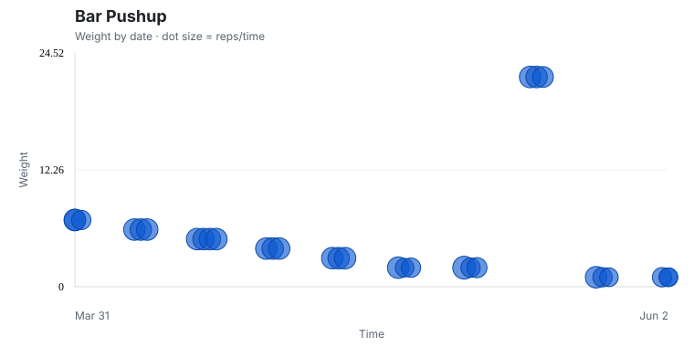
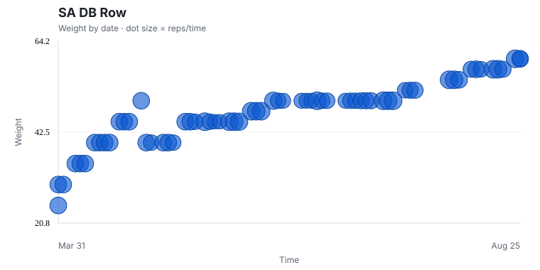
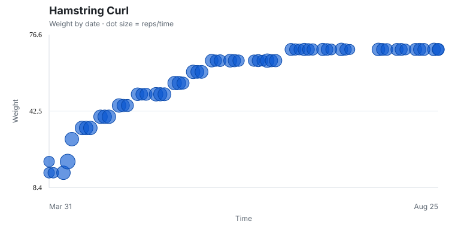
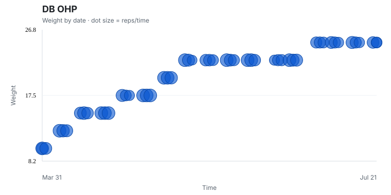
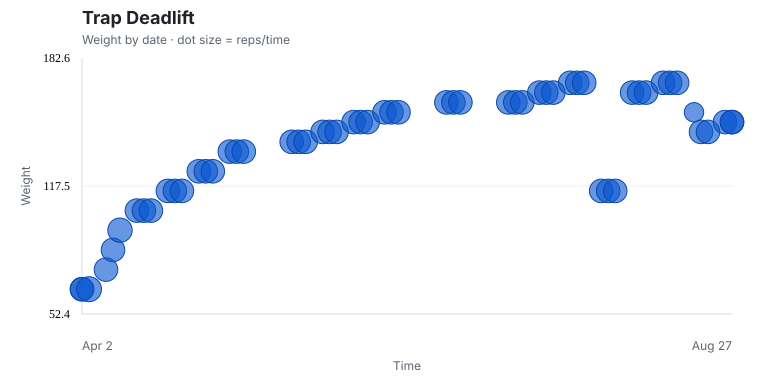

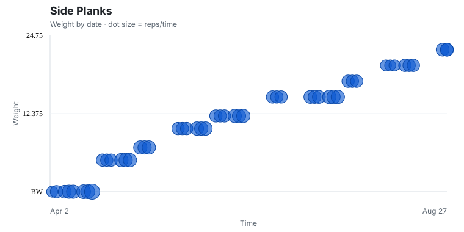
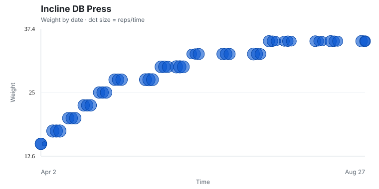
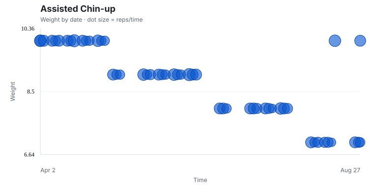
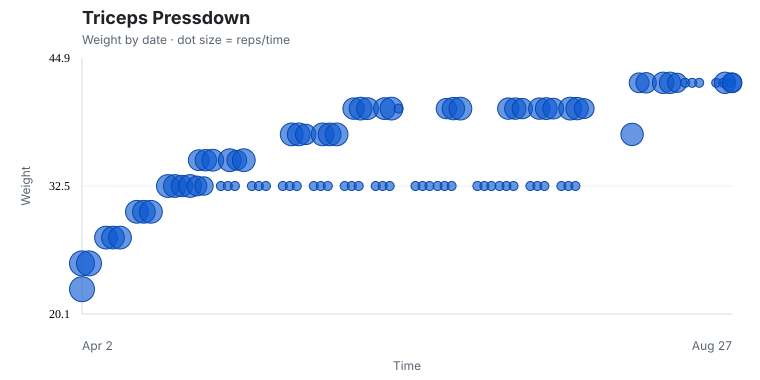
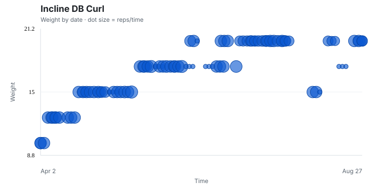
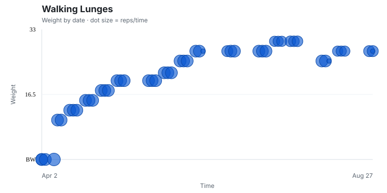
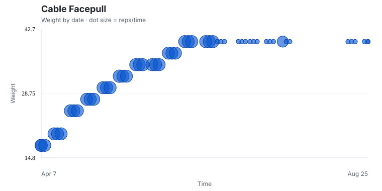
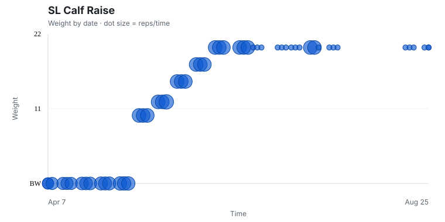
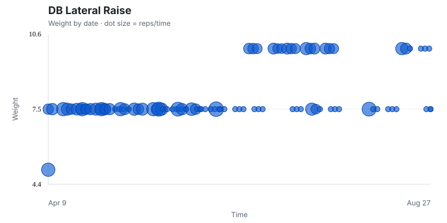

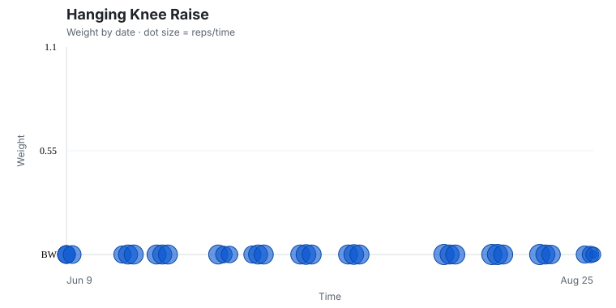

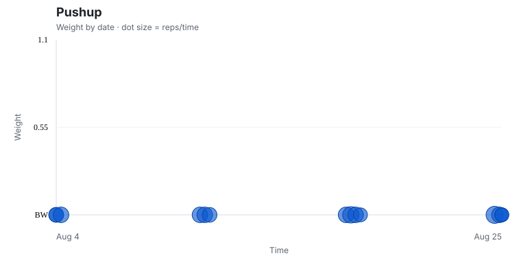
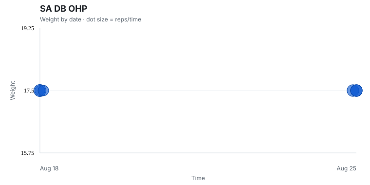
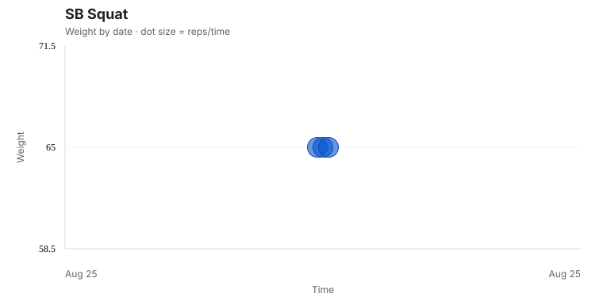